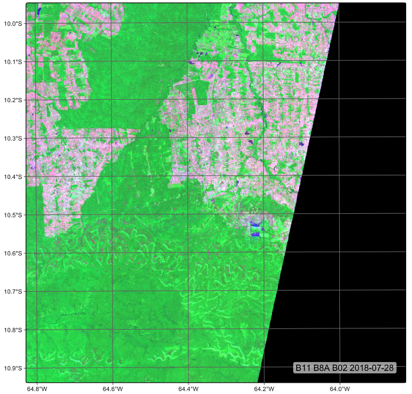

5 Building regular data cubes
Configurations to run the chapter
from pysits import *
import pandas as pd
pd.set_option("display.max_columns", 100)
pd.set_option("display.max_rows", 4)
# set bookdir if it does not exist
from pathlib import Path
home = str(Path.home())
tempdir_py = home + "/sitsbook/tempdir/Python/dc_regularize"
Path(tempdir_py).mkdir(parents=True, exist_ok=True)5.1 The need for regular EO data cubes
Analysis Ready Data (ARD) collections are often irregular in space and time. Bands may have different resolutions, images may not cover entire tiles, and time intervals are inconsistent. Clouds and sensor artifacts introduce “holes” in the data, corrupting the time series. If time steps differ or values are missing, batch training breaks and the model learns spurious correlations. Additionally, most machine learning and deep learning libraries expect tensors of identical shape (e.g., n_samples × n_features × time). Regular data cubes guarantee fixed-length feature vectors and GPU-friendly batches. Regularization turns heterogeneous image archives into clean, structured data ready for machine learning models.
Data from ARD collections can be converted into regular data cubes with sits_regularize(), which uses the gdalcubes package [1]. This function has two components:
Spatial harmonization: reproject and resample everything onto the same tiling system and spatial resolution. For example, when Sentinel-1 and Sentinel-2 images are merged in
sits, they are projected onto MGRS grid tiles.Temporal harmonization: creates equispaced intervals (e.g., 16-day, monthly, or seasonal composites), filling gaps introduced by cloud cover and sensor errors.
sitsstacks every image within a chosen interval to combine them. It sorts images in increasing order of cloud cover percentage. The least cloud-filled image is taken as a reference, and the others are used to try to fill its gaps. Pixels with persistent cloud cover are marked asNAand are temporally interpolated during computation.
Regularizing Sentinel-2 images
In the following example, we create a non-regular data cube from the Sentinel-2 collection available in Microsoft’s Planetary Computer (MPC). The area lies within the state of Rondônia, Brazil, and is defined by the MGRS tiles 20LKP and 20LLP. We use sits_cube() to retrieve the collection.
# Retrieving a non-regular ARD collection from AWS
s2_cube_rondonia <- sits_cube(
source = "AWS",
collection = "SENTINEL-2-L2A",
tiles = c("20LLP", "20LKP"),
bands = c("B02", "B8A", "B11", "CLOUD"),
start_date = as.Date("2018-06-30"),
end_date = as.Date("2018-08-31")
)
# Show the different timelines of the cube tiles
sits_timeline(s2_cube_rondonia)# Retrieving a non-regular ARD collection from AWS
s2_cube_rondonia = sits_cube(
source = "AWS",
collection = "SENTINEL-2-L2A",
tiles = ["20LLP", "20LKP"],
bands = ["B02", "B8A", "B11", "CLOUD"],
start_date = "2018-06-30",
end_date = "2018-08-31"
)
# Show the different timelines of the cube tiles
sits_timeline(s2_cube_rondonia)$`20LKP`
[1] "2018-07-03" "2018-07-08" "2018-07-13" "2018-07-18" "2018-07-23"
[6] "2018-07-28" "2018-08-02" "2018-08-07" "2018-08-12" "2018-08-17"
[11] "2018-08-22" "2018-08-27"
$`20LLP`
[1] "2018-06-30" "2018-07-03" "2018-07-05" "2018-07-08" "2018-07-10"
[6] "2018-07-13" "2018-07-15" "2018-07-18" "2018-07-20" "2018-07-23"
[11] "2018-07-25" "2018-07-28" "2018-07-30" "2018-08-02" "2018-08-04"
[16] "2018-08-07" "2018-08-09" "2018-08-12" "2018-08-14" "2018-08-17"
[21] "2018-08-19" "2018-08-22" "2018-08-24" "2018-08-27" "2018-08-29"
Different satellites—even those within the same mission, such as Sentinel-2A and Sentinel-2B—follow slightly different orbits and acquire data at different times. These are referred to as different acquisition orbits. Due to factors such as the Earth’s rotation and the lack of perfect alignment between Earth’s orbit and the satellites’ paths, some regions are not observed by both satellites during each orbital cycle. As a result, image acquisition timelines can differ between tiles.
In our example, tile 20LKP has twelve images within the selected time period, while tile 20LLP has twenty-four. To harmonize these differences, we use the sits_regularize() function, which builds a data cube with a regular timeline and estimates the best available pixel value for each time interval.
Let’s now examine some technical aspects of sits_regularize(). The period parameter defines the time interval between observations, using the ISO 8601 time period format. This format specifies intervals as P[n]Y[n]M[n]D, where “Y” stands for years, “M” for months, and “D” for days. For example, P1M denotes a one-month interval, and P15D denotes a fifteen-day interval. For each time step, sits_regularize() identifies all available images within the defined window. Then, for each pixel, it sorts these candidate values by increasing cloud cover and selects the first cloud-free value. In this way, the function builds a regular time series for each pixel, even when observations come from different dates or satellites.
In this example, we set the regular cube’s spatial resolution to forty meters to speed up processing. For real-world applications, however, we recommend using a resolution of ten meters. We also recommend copying the ARD data to a local directory using sits_cube_copy() before applying regularization. This separates the process of creating a regular data cube into two distinct steps: (a) downloading data from ARD collections and (b) building the data cube from local files. This approach can significantly speed up processing. After sits builds the regular cube, the ARD images can be deleted to save space. Finally, keep in mind that depending on the speed of your Internet connection, sits_cube_copy() may take some time to complete.
# set output dir for ARD data if it does not exist
tempdir_r_s2 <- "~/sitsbook/tempdir/R/dc_regularize/s2"
dir.create(tempdir_r_s2, showWarnings = FALSE)
s2_cube_local <- sits_cube_copy(
cube = s2_cube_rondonia,
output_dir = tempdir_r_s2
)
# set output dir fir regular cube if it does not exist
tempdir_r_s2_reg <- "~/sitsbook/tempdir/R/dc_regularize/s2_reg"
dir.create(tempdir_r_s2, showWarnings = FALSE)
# Regularize the cube to 16-day intervals
reg_cube_rondonia <- sits_regularize(
cube = s2_cube_rondonia,
output_dir = tempdir_r_s2_reg,
res = 40,
period = "P16D",
multicores = 6)
# Plot tile 20LLP of the regularized cube with the least cloud cover
# The pixels of the regular data cube cover the full MGRS tile
plot(reg_cube_rondonia, tile = "20LLP")# To be completed
Regularizing Sentinel-1 images
We have already discussed how different acquisition orbits can result in mismatched timelines. But that is not the only irregularity we need to address. Different satellites may also have different acquisition modes—that is, the way their sensors capture data, including direction, resolution, swath width, and polarization.
In the case of SAR (Synthetic Aperture Radar) satellites like Sentinel-1, the acquisition mode determines:
- Viewing geometry (how the radar observes the ground),
- Incidence angle (the angle between the radar beam and the vertical to the Earth),
- Spatial resolution and coverage area,
- Whether it collects single or dual polarization (e.g., VV, VH).
SAR images are usually captured at an oblique angle (not straight down), resulting in a slanted geometry known as slant range, rather than a map-like view called ground range. As a result, raw SAR images do not align well with optical imagery like Sentinel-2, which uses a nadir (straight-down) viewing geometry.
To facilitate the integration of Sentinel-1 and Sentinel-2 data, sits_regularize() reprojects SAR images to the MGRS grid. Internally, it uses the gdalwarp() function (via the gdalcubes backend or an equivalent tool), which supports several interpolation methods:
- Nearest: Assigns the value of the nearest input pixel (fastest, preserves discrete classes).
- Bilinear: Performs linear interpolation from 4 nearest input pixels. Smooths intensity values.
- Cubic: Uses 16 surrounding pixels. Smoother, more complex but can introduce artifacts.
By default, sits applies nearest-neighbor interpolation for categorical or discrete bands (e.g., land cover or polarization labels), and bilinear interpolation for continuous-valued bands (e.g., backscatter intensity). However, the exact interpolation method may vary depending on how the raster cube is created and the backend in use. Advanced users can customize reprojection parameters through sits_config() or environment variables that modify GDAL behavior.
We illustrate the spatial harmonization feature of sits_regularize() in the following example, which uses the "SENTINEL-1-RTC" collection from the Microsoft Planetary Computer (MPC).
# create an RTC cube from MPC collection for a region in Mato Grosso, Brazil.
cube_s1_rtc <- sits_cube(
source = "MPC",
collection = "SENTINEL-1-RTC",
bands = c("VV", "VH"),
orbit = "descending",
tiles = c("22LBL"),
start_date = "2021-06-01",
end_date = "2021-10-01"
)
plot(cube_s1_rtc, band = "VH", palette = "Greys", scale = 0.7)After retrieving a non-regular ARD collection from the Microsoft Planetary Computer (MPC), we use sits_regularize() to produce a SAR data cube aligned with MGRS tile “22LBL”. To visualize the SAR data, we generate a multi-date plot of the “VH” polarization band. In this plot, the first date is displayed in red, the second in green, and the third in blue—producing an RGB composite that visually highlights changes over time.
# define the output directory
# set outout dir if it does not exist
tempdir_r_sar <- "~/sitsbook/tempdir/R/dc_regularize/sar"
dir.create(tempdir_r_sar, showWarnings = FALSE)
# create a regular RTC cube from MPC collection for a tile 22LBL.
cube_s1_reg <- sits_regularize(
cube = cube_s1_rtc,
period = "P16D",
res = 40,
tiles = c("22LBL"),
memsize = 12,
multicores = 6,
output_dir = tempdir_r_sar
)
plot(cube_s1_reg, band = "VH", palette = "Greys", scale = 0.7,
dates = c("2021-06-06", "2021-07-24", "2021-09-26"))5.2 Summary
In this chapter, we learned how to produce regular Earth observation (EO) data cubes from non-regular subsets of ARD collections. Regularization is a key operation when working with time series, as it enables the use of machine learning models on temporally aligned data. In the next chapter, we will discuss how to merge sensors from different data sources and, when necessary, how to combine these datasets with regularization operations.